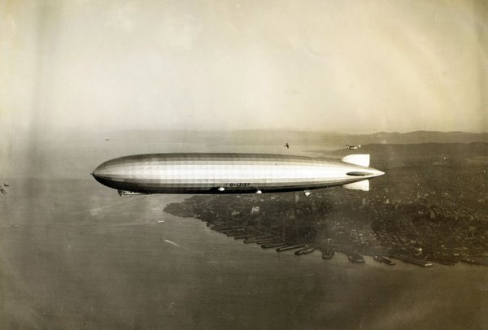
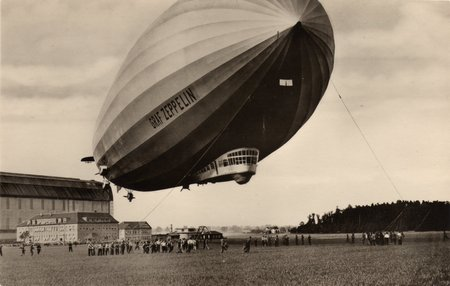
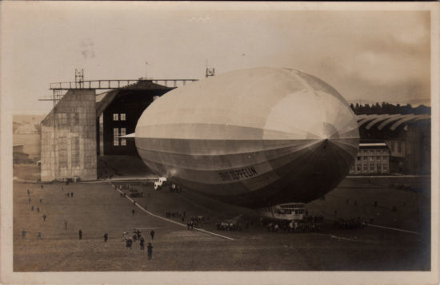

About LZ-127 (The Graf Zeppelin)
- Count Ferdinand von Zeppelin, a 19th century German general, is considered the father of the rigid airship (German: Luftschiff).
- LZ-127 -- or Luftschiff Zeppelin 127 -- was christened on July 8, 1928 at its hangar base in Friedrichshafen, Germany.
- The Graf Zeppelin made its maiden flight on September 18, 1928.
- The Graf Zeppelin also made the very first commercial passenger flight across the Atlantic, departing Friedrichshafen, Germany on October 11, 1928, and landing at Lakehurst, New Jersey on October 15, 1928, after a flight of 111 hours and 44 minutes.
- The Graf Zeppelin was significantly faster than most ocean-going passenger ships of its time, often travelling at a cruising speed of 68 knots (approximately 78 mph).
- Most passenger ships of that era travelled at speeds ranging from 20 to 30 knots (approximately 25 to 35 mph).
- Clearly, the Graf Zeppelin was able to complete transatlantic crossings in far less time than traditional ocean liners.
Zeppelins in World War I (1914 - 1918)
During World War I, Germany used zeppelins primarily for reconnaissance flights over the North Sea and the Baltic Sea.
Beginning in 1915, German zeppelins conducted bombing raids against London and other British cities.
While these raids caused considerable damage and terrorized the civilian population, improvements in British air defenses and fighter aircraft over time eventually made the airships more vulnerable.
Due to their large size and the fact that they relied on flammable hydrogen gas for lift, zeppelins became less and less effective towards the end of the war, especially after Britsh aircraft began to be armed with incendiary bullets.
The Golden Age of Zeppelin Travel (1920s - 1930s)
In the years following World War I, the Zeppelin airship company shifted its focus to civiilan air travel.
The company built larger, more advanced airships that used, when available, nonflammable helium instead of the extremely flammable hydrogen.
Zeppelins soon became international symbols of luxury and technological prowess.
First Flight of the Graf Zeppelin
The Graf Zeppelin made its first test flight on September 18, 1928.
The ship departed Friedrichshafen at 3:32 PM and flew for approximately three hours before returning to its hangar base.
Several other test flights were conducted, including one that lasted for 34 hours and 30 minutes.
German cities the airship overflew during this endurance flight included Ulm, Nuremberg, Frankfurt, Wiesbaden, Cologne, Dusseldorf, Bremen, Hamburg, Berlin, Leipzig, and Dresden.
The Hindenburg (LZ-129) Disaster
Launched in 1936, the LZ-129 Hindenburg was the largest airship ever built.
The Hindenburg flew regularly between Germany and the United States, and was specifically designed to offer luxurious transatlantic passenger service.
On May 6, 1937, the Hindenburg suddenly burst into flames and was destroyed in a matter of minutes during its landing approach at Naval Air Station Lakehurst in New Jersey.
The Hindenburg disaster dealt a major blow to the zeppelin airship industry, and marked the end of the Zeppelin Era, as no other large passenger airships were built after the Hindenburg.